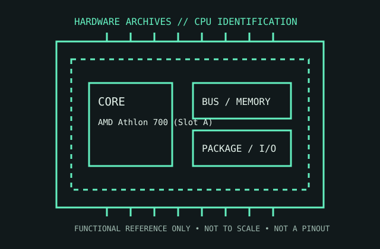

[ AMD GENERATIONS // IDENTIFIED COMPONENT ]
AMD Athlon 700 (Slot A)
The original 700 MHz Athlon “Argon” is an early K7 cartridge processor, using an EV6-derived point-to-point bus and off-die L2 cache.

MODEL IDENTIFICATION: AMD Athlon 700 (Slot A). Read the full top marking/OPN, speed grade, package, and stepping from the physical part; do not transfer specifications across similarly named revisions.
Recorded specifications
| Cataloged part | AMD Athlon 700 (Slot A) |
|---|---|
| Era / family | First-generation AMD Athlon (K7/Argon), 1999; 700 MHz Slot A model. |
| Key specifications | 700 MHz core; 200 MHz effective system-bus rate (100 MHz clock, double-data-rate transfers); 128 KB on-die L1 cache; 512 KB external L2 cache on the cartridge, at a model-dependent fraction of core speed; Slot A cartridge. |
| Interface / fit | Requires an AMD Slot A motherboard, not Intel Slot 1 despite superficial cartridge resemblance. Confirm the board’s Athlon support, bus speed, BIOS, and cartridge-retention/cooling hardware. |
| Variants / identification | Early Athlon cache clock ratio and cartridge internals vary by speed and revision. Slot A and Slot 1 are electrically and mechanically distinct interfaces. |
Compatibility and service notes
- Requires an AMD Slot A motherboard, not Intel Slot 1 despite superficial cartridge resemblance. Confirm the board’s Athlon support, bus speed, BIOS, and cartridge-retention/cooling hardware.
- Early Athlon cache clock ratio and cartridge internals vary by speed and revision. Slot A and Slot 1 are electrically and mechanically distinct interfaces.
- Do not force the cartridge into a Slot 1 connector. Verify the CPU core/cooler contact and cartridge condition; record the board chipset, BIOS, and cache ratio when testing.
- Before installation, compare the exact CPU marking with the motherboard maker’s support list, board revision, BIOS minimum, package/socket, power requirements, and memory type. Do not force a package into a socket.
Service & archival record
Do not force the cartridge into a Slot 1 connector. Verify the CPU core/cooler contact and cartridge condition; record the board chipset, BIOS, and cache ratio when testing.
For a collection record, photograph both sides, retain the full model/OPN and date/lot codes, describe package and contact condition, and record the tested motherboard revision, firmware, cooling, memory, and measured operating conditions. Separate measured observations from published limits.
Sources & further reading
- AMD Athlon processor data sheet — 700 MHz Slot A family referenceModel-specific manufacturer, technical-document, or product-history reference; consult the exact device marking and board revision.
- AMD Athlon system-bus and cartridge technical documentationModel-specific manufacturer, technical-document, or product-history reference; consult the exact device marking and board revision.
- AMD Athlon / K7 historical product context — AMD company historyModel-specific manufacturer, technical-document, or product-history reference; consult the exact device marking and board revision.
- golden_pc_age — Slot A Retro PC from 1999Independent video review; treat as supplementary context, not primary manufacturer documentation.
Third-party mirrors or historical document indexes may host manufacturer-authored manuals. Check document revision and exact model marking; board compatibility remains specific to its maker and firmware.